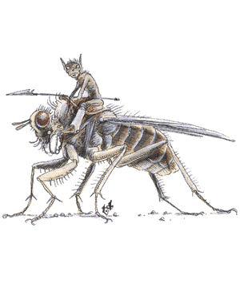

2140
| #AP | AC | MV | HD | THAC0 | # AT | Dmg/AT | Morale | XP Value | |
|---|---|---|---|---|---|---|---|---|---|
| Ant, Giant | 1-100 | 3 | 18 | 2 or 3 | 16 | 1 | 1-6 or 2-8 | Average (9) | Worker: 35 Warrior: 175 |
| Ant Lion, Giant | 1 | 2 | 9, Br 1 | 8 | 12 | 1 | 5-20 | Average (8) | 1,400 |
| Aratha | 1 | 3 | 11 | 9 | 11 | 4 | 1-10(×4) | Elite (16) | 6,000 |
| Aspis, Cow | 1 | 7 | 3 | 10 | 11 | 1 | 3-18 | Elite (13-14) | 2,000 |
| Aspis, Drone | 2-20 | 3 | 15 | 6 | 15 | 2 | 1d4 or weapon | Elite (13-14) | 650 |
| Aspis, Larva | 6-60 | 6 | 1, Sw 6 | 2 to 5 | 2 HD: 19 3-4 HD: 17 5 HD: 15 | 1 | 2-7 | 2-3 HD: Steady 4-5 HD: Elite | 2 HD: 65 3 HD: 120 4 HD: 175 5 HD: 270 |
| Assassin Bug | 2 | 5 | 6, Fl 18 (C) | 1+1 | 20 | 1 | 1-4 | Unsteady (5-7) | 120 |
| Bee, Worker | 1-10 | 6 | 9, Fl 30 (D) | 3+1 | 17 | 1 | 1-3+poison | Steady (11-12) | 175 |
| Bee, Soldier | 1 | 5 | 12, Fl 30 (C) | 4+2 | 15 | 1 | 1-4+poison | Champion (15-16) | 270 |
| Bumblebee | 1 | 5 | 6, Fl 24 (E) | 6+4 | 13 | 1 | 1-6+poison | Elite (13-14) | 650 |
| Cave Cricket | 1-8 | 4 | 6, Hop 3 | 1+3 | 20 | Nil | Nil | Unreliable (2-4) | 15 |
| Dragonfly, Giant | 1-6 | 3 | 3, Fl 36 (B) | 7 | 13 | 1 | 3-12 | Steady (11-12) | 1,400 |
| Dragonfly, Larva | 1 | 3 | 9, Sw 3 (jet 24) | 6+1 | 15 | 1 | 3-18 | Steady (11-12) | 650 |
| Ear Seeker | 1-4 | 9 | 1 | 1 hp | 20 | 1 | See below | Unsteady (5-7) | 15 |
| Firefriend | 1-4 | 4 | 3, Fl 18 (B) | 1+4 | 20 | 1 | 1-2 | Unsteady (5-7) | 35 |
| Fly, Bluebottle | 1-10 | 6 | 9, Fl 30 (D) | 3 | 19 | 1 | 1-8 | Unsteady (5-7) | 65 |
| Fly, Horsefly | 1-4 | 5 | 6, Fl 27 (D) | 6 | 17 | 1 | 2-16 | Unsteady (5-7) | 270 |
| Fyrefly | 1 | 5, Fl 18 (A) | 1 hp | 15 | 1 | 1 | Steady (11) | 175 | |
| Horax | 3-30 | 3 | 15 | 4 | 17 | 1 | 2d8 | Average (10) | Adult: 270 Young: 15 |
| Hornet, Giant | 1 | 2 | 6, Fl 24 (B) | 5 | 15 | 1 | 1-4 | Average (8-10) | 650 |
| Pernicon | 4-200 | 3 | 12 | 1 hp | 20 | 1 | 1-10 | Unreliable (4) | 15 |
| Praying Mantis | 1-2 | 5 | 15 | 2 to 12 | 2 HD: 19 4 HD: 17 6 HD: 15 8 HD: 13 10 HD: 11 12 HD: 9 | 3 | 2-4 HD: 1-2/1-2/1-4 6-8 HD: 1-4/1-4/1-8 10 HD: 1-6/1-6/1-10 12 HD: 1-8/1-8/1-12 | Fearless (19-20) | 2 HD: 35 4 HD: 120 6 HD: 270 8 HD: 650 10 HD: 1,400 12 HD: 2,000 |
| Termite, Giant Harvester | |||||||||
| King | 1 | 5 | 6 | 6+6 | 15 | 1 | 3-18 | Unreliable (2-4) | 975 |
| Queen | 1 | 4 | 3 | 8+8 | 13 | 1 | 5-30 | Unsteady (5-7) | 1,400 |
| Soldier | 3-18 | 2/8 | 9 | 2+2 | 19 | 1 | 1-4 | Elite (13-14) | 120 |
| Worker | 6-60 | 2/10 | 9 | 1+2 | 20 | 1 | 1-2 | Average (8-10) | 35 |
| Tick, Giant | 3-12 | 3 | 3 | 2 to 4 | 2 HD: 19 3-4 HD: 17 | 1 | 1-4 | Average (8-10) | 2 HD: 35 3 HD: 65 4 HD: 120 |
| Wasp, Giant | 1-20 | 4 | 6, Fl 21 (B) | 4 | 17 | 2 | 2-8/1-4 | Average (8-10) | 420 |
Insects are the heartiest and the most numerous of creatures. Normal insects are found almost everywhere. The giant variety, many of which are listed here, with added brawn and power, make tough opponents.
Ant, Giant
Both worker and warrior ants fight. If a warrior manages to bite, it also tries to sting for 3d4 points damage. A successful save reduces damage to 1d4. The queen has 10 HD but does not move or fight.
Ant Lion, Giant
The ant lion builds tapering pits in loose sand and waits for prey to fall in. Once the ant lion hits, all additional attacks are automatic.
Aratha
Aratha grasp and hold prey with their 8-foot clawed tentacles that can lash out 20 feet. An aratha does not bite opponents, but chews flesh torn from prey by its tentacles.
Psionics Summary
| Level | Dis/Sci/Dev | Attack/Defense | Score | PSPs |
|---|---|---|---|---|
| 9 | 3/1/7 | PsC,MT,PB/All | 13 | 202 |
Psychokinesis — Sciences: nil; Devotion: molecular agitation.
Psychometabolism — Sciences: nil; Devotions: body equilibrium, suspend animation.
Telepathy — Science: psionic crush; Devotions: attraction, empower, mind thrust, .
Aspis, Cow
Aspis cows exude a dangerous corrosive that coats the body and adheres to the walls and floor of the chambers. This corrosive causes damage every round her opponents stay in her chamber.
Aspis, Drone
Most combat situations are handled by aspis drones. They rise on two rear legs, leaving the other four limbs to wield two weapons and two shields, increasing its AC to 2. All aspis are immune to cold and electrical damage; fire-based attacks cause only half damage.
Aspis, Larva
Aspis larvae attack with their perpetually ravenous jaws.
Assassin Bug
The male assassin bug attacks first with the female close to the battle. Those bitten must save vs. poison or that part of the body is paralyzed for one hour. The female attacks that same location the following round to inject 1d6+6 eggs. In 1d12+12 hours, the eggs hatch, and each larva causes 1 point of damage per hour. After two weeks, the larva emerge as adults. Only powerful spells like wish and limited wish will erase the infestation.
Bee, Worker
Worker bees use their stinger in combat. The victim must save vs. poison or suffer and additional 1d4 points of damage. Bees lose their stinger after one use and die in an hour. If encountered at the hive, there will be 20 times the normal number of bees.
Bee, Soldier
Soldier bees are identical to worker bees, except their sting causes more damage, and the victim must save with a -1 penalty.
Bumblebee
Bumblebee poison causes an additional 1d6 points of damage unless a save vs. poison (with a -1 penalty) is made. If encountered at or near the nest, there will be 1d6+6 bumblebees, and a combative queen. The queen has 8d4 HD and a sting that causes 1d8 points of damage. The poison from her sting causes an additional 2-8 points of damage if a save vs. poison at a -2 penalty is failed. Bumblebees do not lose their stingers after use.
Cave Cricket
If a group of people are within 20 feet of a chirping cave cricket, the noise drowns out all speech and vocal spell casting. The noise inhibits the victim's ability to hear approaching predators and enemies.
Dragonfly
Giant dragonflies gain a -3 bonus to initiative rolls and a +4 Armor Class bonus against missile weapons. A dragonfly scoops tiny- and small-sized creatures into its leg basket and devours them in midair. When captured, its victim is attacked automatically. When attacking man- or large-sized creatures, the dragonfly darts in to bite with its mandibles, and backs up, always facing its opponent.
Dragonfly, Larva
These larva surprise their prey 50% of the time. Their mandibles are covered with a rubbery organ when not in use; so even before the attack, they appear to be inoffensive, toothless creatures.
Ear Seeker
The ear seeker needs warm places to lay its eggs, favoring locations like ears. The creature lays 8+1d8 eggs that hatch in 4d6 hours. The larva eat the surrounding tissue, deafening the victim. Constantly burrowing deeper into the victim's head where food and warmth are plentiful, the host has a 90% chance of dying in 1d4 days. After this time, the ear seekers emerge from the infested ear as adults. A cure disease removes the infestation but does not return the loss of hearing.
Firefriend (Giant Firefly)
In addition to its mandibles, the giant firefly can brighten its abdomen once every turn, creating a beam of greenish light that causes 5d4 points of damage; one-half damage if a save vs. wands is successful.
Fly, Giant Bluebottle
This breed of giant fly prefers carrion, offal, and the like. They are, however, attracted to sweet odors, and creatures covered with blood or open wounds.
Fly, Giant Horsefly
The largest of all giant flies, the giant horsefly alights on any creature to attack for blood with its tuberous mouth. After biting, the giant horsefly causes an equal amount of damage the next round by drawing blood, unless driven off.
Fyrefly
When a fyrefly contacts flammable objects, these items must save vs. normal fire or be consumed. Persons in burning clothing suffer 1d6 points of damage. Hits that do not strike burnable material, cause 1 point of damage to the victim.
Horax
Horax attack in packs, gaining a -1 bonus to initiative rolls. Once a horax scores a hit, it maintains its hold, causing damage every round.
Hornet, Giant
The solitary giant hornet swoops down on its prey, holding with its legs while its stinger repeatedly stabs the victim. A failed save vs. poison causes an additional 5d6 points of damage and 2d6 hours of paralyzation. Hornets do not lose their stingers when they attacks.
Pernicon
Pernicons attack by swarming victims and tearing at exposed flesh with their huge mandibles. Able to worm their way under clothing and armor, no one is completely safe from these creatures. When the swarm hits, the victim suffers 1d10 points of damage and 1 point of Constitution. If the Constitution dips below 3, the victim falls unconscious; below 1 and the victim dies. One point of Constitution is recovered per day, regardless of healing methods.
Praying Mantis, Gargantuan
The gargantuan praying mantis grabs prey, that inadvertently comes too close, with its front spiny arms. Besides its two claws, it bites with its strong mandibles, removing and chewing flesh with each unerring strike.
Termite, Giant Harvester
Groups of 30 or more worker termites are accompanied by soldiers. Soldier termites can spit an irritating liquid like kerosene once per turn at a range of 10 feet. This flammable liquid blinds creatures, for 5d4 rounds, that do not save vs. poison. If ignited, termite spittle causes 4d4 points of damage. King termites have double range spittle and can use this attack every other round, but the queen lacks this ability. Both the queen and king (and the eggs) are guarded by twice the number of workers and soldiers encountered normally, and who attack with a +1 to hit and a +5 bonus to morale rolls.
Tick, Giant
These creatures drop on victims from trees, stalactites, or rock formations. After the initial hit, the tick drains 1d6 hit points of blood every round until its drain total equals its hit point total. A victim has a 50% chance of contracting a fatal disease that kills the host in 2d4 days unless a cure disease is cast.
Wasp, Giant
These cooperative insects attack with both their bite and stinger. The venom carried by wasps is identical to that held by the giant hornet. Wasps do not lose their stingers when they attack.
◆ 1048 ◆